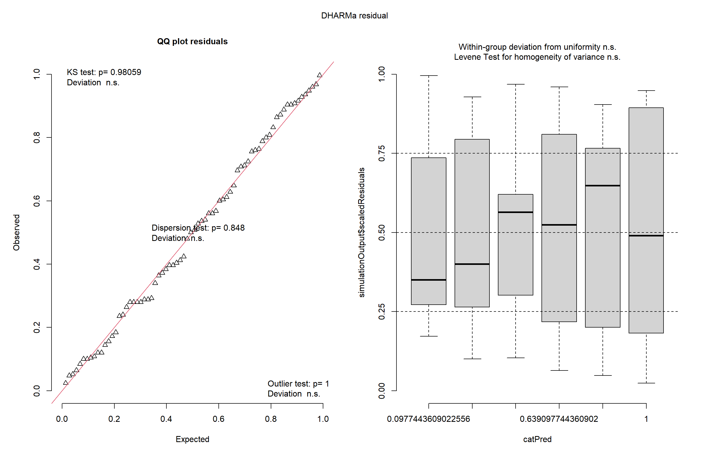
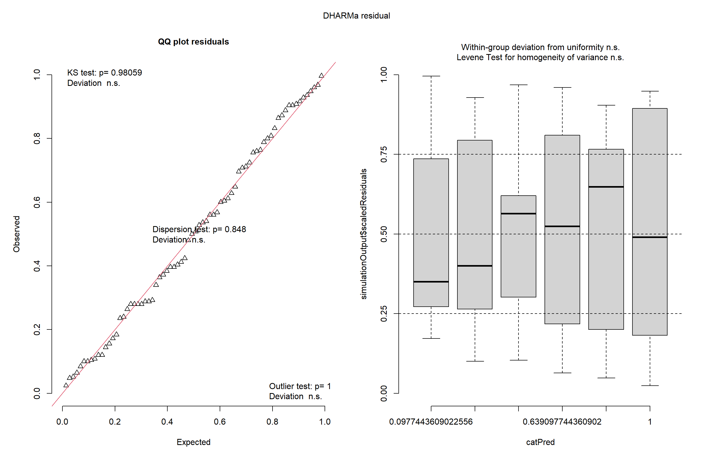
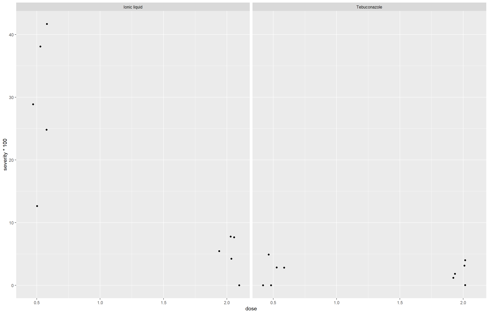
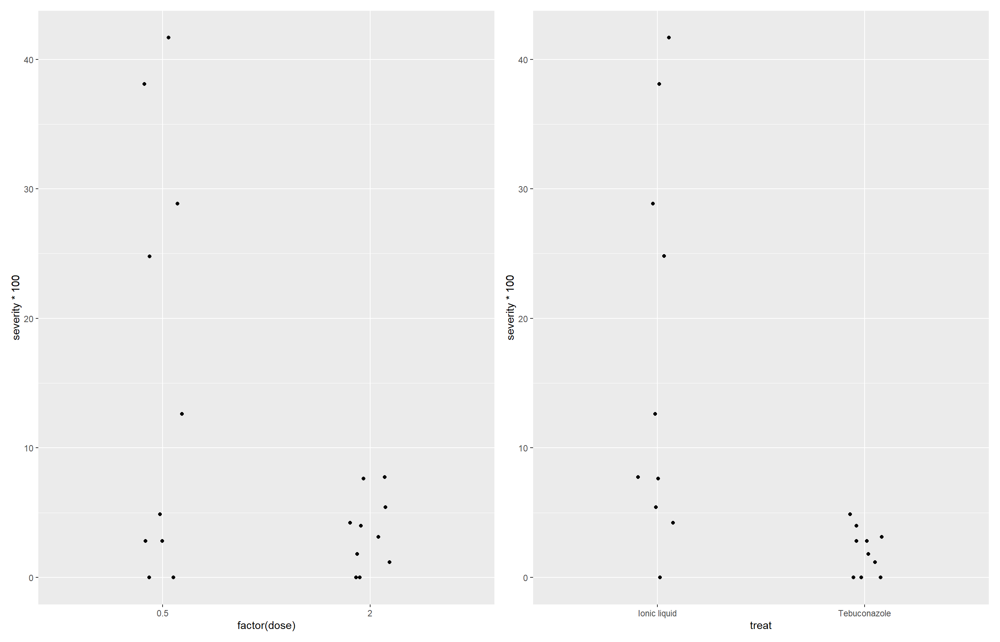
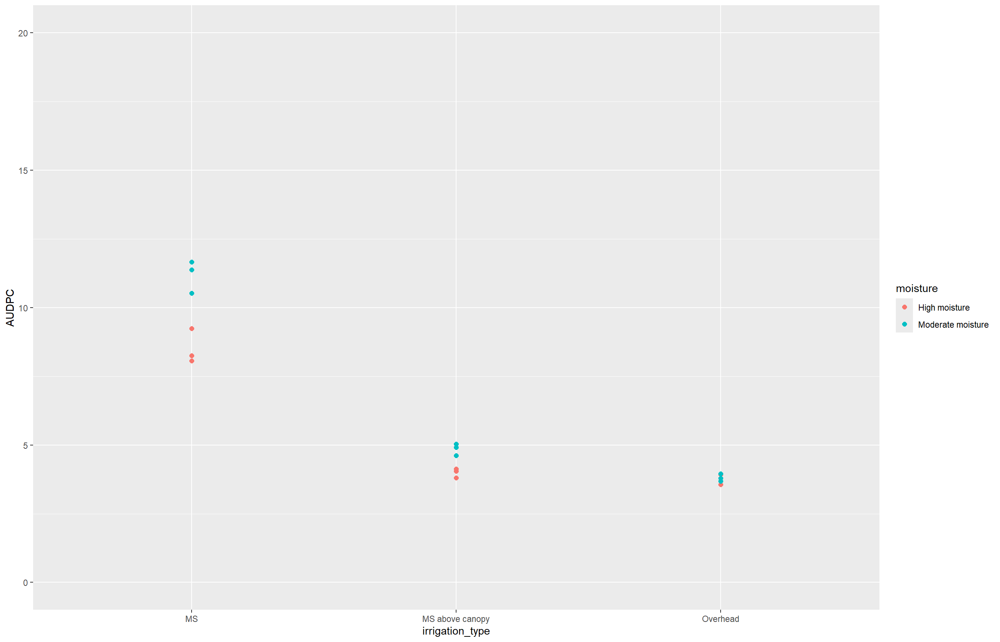

library(DHARMa)
insetos <- InsectSprays
m3 <- lm(rank(count) ~spray, data = insetos)
plot(simulateResiduals(m3))
Nesta aula, vamos aprofundar a análise estatística utilizando modelos mais robustos e flexíveis, como o modelo linear generalizado (GLM), a ANOVA fatorial e a análise de interações entre fatores.
Para isso, vamos retomar os dados da aula anterior (InsectSprays) e aplicar um modelo GLM com distribuição Poisson para contagens. Além disso, utilizaremos a ferramenta DHARMa para diagnóstico gráfico com resíduos simulados.
DHARMa é uma ferramenta poderosa que substitui os métodos tradicionais de diagnóstico (como apenas shapiro.test() e gráficos QQ-plot) por uma abordagem mais robusta, principalmente quando saímos da ANOVA clássica e entramos em modelos transformados ou GLMs.
library(DHARMa)
insetos <- InsectSprays
m3 <- lm(rank(count) ~spray, data = insetos)
plot(simulateResiduals(m3))
Após verificarmos a adequação do modelo transformado com o auxílio do pacote DHARMa, agora vamos explorar uma abordagem alternativa utilizando um modelo de regressão generalizada (GLM) com distribuição Poisson, que é especialmente indicado para dados de contagem como os presentes no conjunto InsectSprays.
A função glm() pertence ao pacote base do R e é usada para ajustar modelos lineares generalizados. Essa função permite modelar diferentes tipos de variáveis resposta (contagem, proporção, binária, etc.) por meio da especificação de uma família de distribuição e uma função de ligação (link function).
Neste caso, vamos usar a família poisson, que é apropriada para dados de contagem.
Após ajustar o modelo com glm(), precisamos avaliar se o fator spray tem efeito significativo sobre a variável resposta. Para isso, faremos uma análise de deviance, que é o equivalente da ANOVA nos modelos GLM.
anova()Realiza uma análise de deviance sequencial (Type I) do modelo GLM, mostrando se os fatores incluídos influenciam significativamente a variável resposta.
Analysis of Deviance Table
Model: poisson, link: log
Response: count
Terms added sequentially (first to last)
Df Deviance Resid. Df Resid. Dev Pr(>Chi)
NULL 71 409.04
spray 5 310.71 66 98.33 < 2.2e-16 ***
---
Signif. codes: 0 '***' 0.001 '**' 0.01 '*' 0.05 '.' 0.1 ' ' 1Anova() do pacote carEssa função é uma versão mais robusta da análise de variância, que permite testar efeitos de forma mais detalhada, incluindo correções para diferentes tipos de desequilíbrios nos dados.
Analysis of Deviance Table (Type II tests)
Response: count
LR Chisq Df Pr(>Chisq)
spray 310.71 5 < 2.2e-16 ***
---
Signif. codes: 0 '***' 0.001 '**' 0.01 '*' 0.05 '.' 0.1 ' ' 1check_model()plot(simulateResiduals())O modelo de regressão de Poisson ajustado mostrou que o fator spray tem efeito altamente significativo sobre a variável resposta com o valor de p < 0,05. Agora usaremos emmeans para descobrir onde exatamente estão essas diferenças.
emmeans e cldlibrary(emmeans)
library(multcomp)
medias_m4 <- emmeans(m4, ~spray, type = "response")
cld(medias_m4) spray rate SE df asymp.LCL asymp.UCL .group
C 2.08 0.417 Inf 1.41 3.08 1
E 3.50 0.540 Inf 2.59 4.74 12
D 4.92 0.640 Inf 3.81 6.35 2
A 14.50 1.100 Inf 12.50 16.82 3
B 15.33 1.130 Inf 13.27 17.72 3
F 16.67 1.180 Inf 14.51 19.14 3
Confidence level used: 0.95
Intervals are back-transformed from the log scale
P value adjustment: tukey method for comparing a family of 6 estimates
Tests are performed on the log scale
significance level used: alpha = 0.05
NOTE: If two or more means share the same grouping symbol,
then we cannot show them to be different.
But we also did not show them to be the same. A comparação múltipla das médias ajustadas pelo modelo de Poisson, com correção de Tukey, revelou diferenças significativas entre alguns tratamentos com spray. A análise indicou que o tratamento C teve a menor média de contagem (2,08) e diferiu significativamente dos demais. Os tratamentos E (3,50) e D (4,92) apresentaram médias intermediárias. Já os tratamentos A (14,50), B (15,33) e F (16,67) tiveram as maiores médias e não diferiram entre si, formando um grupo estatisticamente semelhante.
Essa análise é utilizada quando se deseja avaliar simultaneamente o efeito de dois ou mais fatores sobre uma variável resposta e investigar se existe interação entre esses fatores. Usaremos para demonstração o conjunto de dados antifungicos, disponível online, que contém informações sobre a severidade de uma doença fúngica sob diferentes tratamentos e doses aplicadas.
Antes da análise estatística, vamos visualizar os dados em um três gráficos de dispersão com pontos usando geom_jitter():
library(tidyverse)
antifungicos |>
ggplot(aes(dose, severity*100))+
geom_jitter(width = 0.1)+
facet_wrap(~ treat)
Esse gráfico ajuda a visualizar a possível interação entre os fatores dose e treat.
p1 <- antifungicos |>
ggplot(aes(factor(dose), severity*100))+
geom_jitter(width = 0.1)
p2 <- antifungicos |>
ggplot(aes(treat, severity*100))+
geom_jitter(width = 0.1)
library(patchwork)
p1+p2
O uso do patchwork permite colocar os dois gráficos lado a lado para facilitar a comparação visual entre os fatores.
Analysis of Variance Table
Response: severity
Df Sum Sq Mean Sq F value Pr(>F)
treat 1 0.113232 0.113232 30.358 4.754e-05 ***
dose 1 0.073683 0.073683 19.755 0.0004077 ***
treat:dose 1 0.072739 0.072739 19.502 0.0004326 ***
Residuals 16 0.059678 0.003730
---
Signif. codes: 0 '***' 0.001 '**' 0.01 '*' 0.05 '.' 0.1 ' ' 1O valor de p para a interação foi significativo (p < 0,05), isso indica que o efeito da dose depende do tratamento utilizado (e vice-versa).
Seguiremos com a verificação das premissas do modelo, garantindo que os pressupostos da ANOVA estejam sendo atendidos.
emmeans e cldtreat = Ionic liquid:
dose emmean SE df lower.CL upper.CL
0.5 0.2921 0.0273 16 0.23420 0.3500
2.0 0.0501 0.0273 16 -0.00781 0.1080
treat = Tebuconazole:
dose emmean SE df lower.CL upper.CL
0.5 0.0210 0.0273 16 -0.03690 0.0789
2.0 0.0202 0.0273 16 -0.03768 0.0781
Confidence level used: 0.95 treat = Ionic liquid:
dose emmean SE df lower.CL upper.CL .group
2.0 0.0501 0.0273 16 -0.00781 0.1080 1
0.5 0.2921 0.0273 16 0.23420 0.3500 2
treat = Tebuconazole:
dose emmean SE df lower.CL upper.CL .group
2.0 0.0202 0.0273 16 -0.03768 0.0781 1
0.5 0.0210 0.0273 16 -0.03690 0.0789 1
Confidence level used: 0.95
significance level used: alpha = 0.05
NOTE: If two or more means share the same grouping symbol,
then we cannot show them to be different.
But we also did not show them to be the same. As comparações múltiplas das médias ajustadas mostram que, no tratamento com Ionic liquid, há diferença significativa entre as doses: a dose de 0,5 apresentou severidade média significativamente maior que a dose de 2,0. Já no tratamento com Tebuconazole, as duas doses (0,5 e 2,0) não diferem estatisticamente entre si, pois compartilham o mesmo grupo na letra de agrupamento (.group = 1).
Esses resultados indicam que o efeito da dose na severidade da doença depende do tipo de tratamento utilizado, reforçando o efeito de interação entre dose e tratamento, como apontado anteriormente na ANOVA fatorial.
Por fim, avaliamos a precisão do experimento utilizando o coeficiente de variação (CV), com a função cv.model() do pacote agricolae:
O valor de CV (coeficiente de variação) calculado com cv.model(m_anti) foi de 63,72%, o que indica alta variabilidade residual em relação à média do experimento.
Nesta etapa, vamos utilizar o conjunto de dados PowderyMildew do pacote epifitter, que contém informações sobre a progressão da severidade da doença em diferentes tipos de irrigação e níveis de umidade.
Primeiramente, filtramos os dados para incluir apenas os sistemas de irrigação de interesse:
Em seguida, visualizamos graficamente a evolução da severidade (sev) ao longo do tempo, estratificada por tipo de irrigação e umidade:
Para quantificar a severidade acumulada da doença, calculamos a Área Abaixo da Curva de Progresso da Doença (AUDPC) por bloco, tipo de irrigação e umidade:
Visualizamos os dados de AUDPC:
oidio3 |>
ggplot(aes(irrigation_type, AUDPC, color = moisture))+
geom_point(size = 2)+
scale_y_continuous(limits = c(0,20))
Ajustamos um modelo linear com interação entre os fatores irrigation_type e moisture para investigar se esses fatores afetam significativamente a severidade acumulada da doença:
Analysis of Variance Table
Response: AUDPC
Df Sum Sq Mean Sq F value Pr(>F)
irrigation_type 2 134.341 67.170 451.721 5.073e-12 ***
moisture 1 6.680 6.680 44.924 2.188e-05 ***
irrigation_type:moisture 2 5.104 2.552 17.162 0.0003022 ***
Residuals 12 1.784 0.149
---
Signif. codes: 0 '***' 0.001 '**' 0.01 '*' 0.05 '.' 0.1 ' ' 1revelou que os fatores irrigation_type (tipo de irrigação) e moisture (umidade) têm efeito estatisticamente significativo sobre a resposta AUDPC (p < 0,05 para ambos). Além disso, a interação entre tipo de irrigação e umidade também foi significativa (p < 0,05), indicando que o efeito de um fator depende do nível do outro. Esses resultados indicam que tanto a irrigação quanto a umidade influenciam de forma conjunta a severidade acumulada da doença ao longo do tempo.
Para verificar se os resíduos seguem uma distribuição adequada, usamos o pacote DHARMa:
emmeans e cldirrigation_type = MS:
moisture emmean SE df lower.CL upper.CL
High moisture 8.52 0.223 12 8.04 9.01
Moderate moisture 11.18 0.223 12 10.70 11.67
irrigation_type = MS above canopy:
moisture emmean SE df lower.CL upper.CL
High moisture 3.99 0.223 12 3.51 4.48
Moderate moisture 4.86 0.223 12 4.37 5.34
irrigation_type = Overhead:
moisture emmean SE df lower.CL upper.CL
High moisture 3.68 0.223 12 3.20 4.17
Moderate moisture 3.81 0.223 12 3.33 4.30
Confidence level used: 0.95 irrigation_type = MS:
moisture emmean SE df lower.CL upper.CL .group
High moisture 8.52 0.223 12 8.04 9.01 1
Moderate moisture 11.18 0.223 12 10.70 11.67 2
irrigation_type = MS above canopy:
moisture emmean SE df lower.CL upper.CL .group
High moisture 3.99 0.223 12 3.51 4.48 1
Moderate moisture 4.86 0.223 12 4.37 5.34 2
irrigation_type = Overhead:
moisture emmean SE df lower.CL upper.CL .group
High moisture 3.68 0.223 12 3.20 4.17 1
Moderate moisture 3.81 0.223 12 3.33 4.30 1
Confidence level used: 0.95
significance level used: alpha = 0.05
NOTE: If two or more means share the same grouping symbol,
then we cannot show them to be different.
But we also did not show them to be the same. As médias ajustadas do AUDPC indicam diferenças na severidade acumulada entre os níveis de umidade dentro de cada tipo de irrigação. Para o tipo MS, a severidade foi significativamente maior na umidade moderada (11,18, grupo b) em comparação à alta umidade (8,52, grupo a), mostrando grupos estatísticos distintos. No tipo MS above canopy, também houve diferença significativa entre umidade moderada (4,86, grupo b) e alta (3,99, grupo a). Já no tipo Overhead, não houve diferença estatisticamente significativa entre os níveis de umidade, pois ambos compartilham a mesma letra de grupo (a).